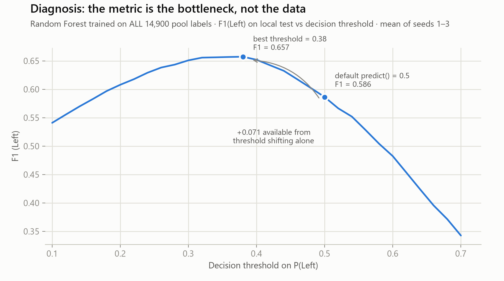
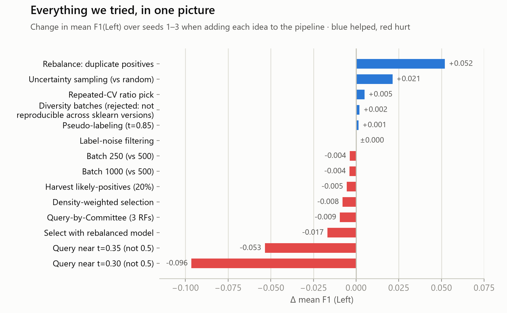
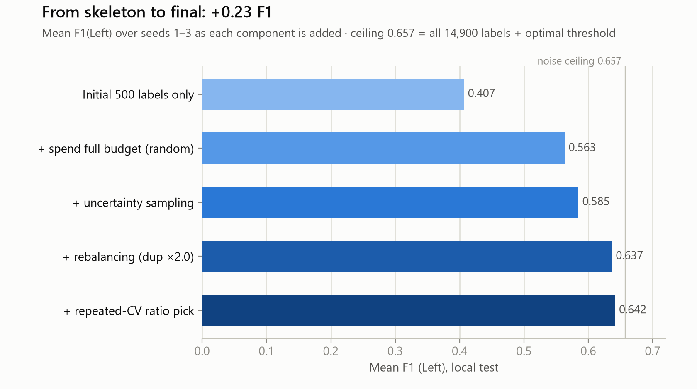

Predict which employees leave. We can't change the classifier and we can't change the metric — the only levers are which rows we ask about and what the training set looks like.
Before optimising anything — where is the ceiling?

Every label in the pool buys 0.586. The threshold alone buys +0.071 — and predict() locks it at 0.5.
The 500 free labels — no budget spent.
Retrain, score the whole pool, take the rows with |P(Left) − 0.5| smallest. Uncertainty, not random: +0.021, and it saturates by ~2,500 labels.
Duplicate every positive row ×r. This drags the forest's fixed 0.5 vote toward the F1-optimal 0.38 — the threshold we weren't allowed to touch. +0.052.
Repeated 3-fold CV on the labeled data only, so r is re-chosen at grading time on the hidden run, never hard-coded. +0.005.
Two levers: which rows we buy, and how often each row appears in the training set. The second one is bigger.

Combining active querying with iterative class rebalancing successfully circumvented the rigid metric lock.

By heavily biasing the training set with positive duplicates, we forced the fixed threshold to act like the optimal one.
When you can't change the scoring function or the model parameters, change the data distribution. The training set is a lever just as much as hyperparameters are.
We hit a hard ceiling on standard Active Learning, but manipulating class balance pushed us past the metric lock.